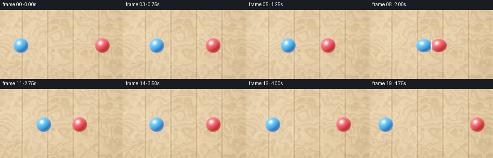
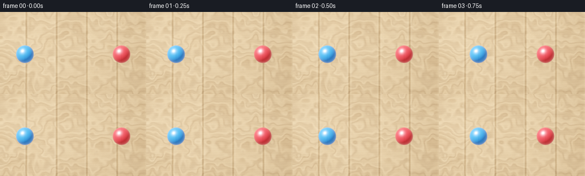

CODING AGENTS AS PIXEL WORLD MODELS
traex/DeepSeek-V4.1-Flash · instance_preservation_0025
点击播放 · 原生 RGB 像素
此结果可播放，但该运行尚未通过最终提交审核。页面展示不代表评测通过。
逐轮保存的候选
回放视频、检查图与代码变化。
每份候选均可单独播放。实际图片检查记录在下方工具轨迹中。
候选 01播放与检查图
点击播放 · 原生 RGB 像素


展开代码变化
--- 上一保存版本
+++ 本次保存版本
@@ -0,0 +1,258 @@
+"""Generate a top-down tabletop ball collision from the text prompt."""
+
+from pathlib import Path
+import math
+
+import cv2
+import numpy as np
+from PIL import Image, ImageDraw, ImageFilter
+
+import artifact_io
+
+
+CASE_DIR = Path(__file__).resolve().parent
+WIDTH = 256
+HEIGHT = 144
+FRAME_COUNT = 20
+FPS = 4.0
+SUPERSAMPLE = 3
+SH = HEIGHT * SUPERSAMPLE
+SW = WIDTH * SUPERSAMPLE
+
+
+def _smooth_noise(rng, width, height, grid_w, grid_h):
+ """Return deterministic smooth noise in roughly [0, 1]."""
+ small = rng.random((grid_h, grid_w), dtype=np.float32)
+ image = Image.fromarray(np.round(small * 255).astype(np.uint8), mode="L")
+ image = image.resize((width, height), Image.Resampling.BICUBIC)
+ return np.asarray(image, dtype=np.float32) / 255.0
+
+
+def _make_wood():
+ """Build a warm, top-lit wooden tabletop with grain and plank seams."""
+ rng = np.random.default_rng(2502)
+ yy, xx = np.mgrid[0:SH, 0:SW].astype(np.float32)
+
+ broad = _smooth_noise(rng, SW, SH, 10, 6)
+ medium = _smooth_noise(rng, SW, SH, 34, 18)
+ fine = _smooth_noise(rng, SW, SH, 120, 64)
+ pores = rng.normal(0.0, 1.0, (SH, SW)).astype(np.float32)
+
+ # Long grain runs across the table. The low-frequency warp prevents
+ # the repeated streaks from reading as a digital pattern.
+ warp = 3.8 * (broad - 0.5) + 1.2 * (medium - 0.5)
+ grain = np.sin(yy * 0.090 + xx * 0.006 + warp * 5.2)
+ grain += 0.42 * np.sin(yy * 0.245 - xx * 0.010 + warp * 9.0)
+ grain += 0.20 * np.sin(yy * 0.520 + xx * 0.018 + 2.0 * fine)
+ grain = np.clip(grain / 1.62, -1.0, 1.0)
+
+ light = np.array([0.66, 0.44, 0.25], dtype=np.float32)
+ dark = np.array([0.39, 0.235, 0.125], dtype=np.float32)
+ wood = light[None, None, :] + (dark - light)[None, None, :] * (
+ 0.34 + 0.16 * broad[..., None] + 0.16 * medium[..., None]
+ )
+ wood += grain[..., None] * np.array([0.095, 0.060, 0.030], dtype=np.float32)
+ wood += (pores * 0.0045)[..., None]
+
+ # Vertical planks with dark seams and a narrow lit edge on the right.
+ plank_width = 53.0 * SUPERSAMPLE
+ phase = np.mod(xx + 7.0 * SUPERSAMPLE, plank_width)
+ seam = np.minimum(phase, plank_width - phase)
+ seam_dark = np.exp(-(seam / (1.7 * SUPERSAMPLE)) ** 2)
+ seam_light = np.exp(-((seam - 2.7 * SUPERSAMPLE) / (1.5 * SUPERSAMPLE)) ** 2)
+ plank_index = np.floor((xx + 7.0 * SUPERSAMPLE) / plank_width).astype(np.int32)
+ plank_tint = 1.0 + 0.030 * np.sin(plank_index * 2.17 + 0.4)
+ wood *= plank_tint[..., None]
+ wood *= (1.0 - 0.34 * seam_dark)[..., None]
+ wood += seam_light[..., None] * np.array([0.055, 0.040, 0.023], dtype=np.float32)
+
+ # Two restrained knots near the edges add believable material character.
+ for knot_x, knot_y, rx, ry in (
+ (18.0 * SUPERSAMPLE, 116.0 * SUPERSAMPLE, 18.0 * SUPERSAMPLE, 6.0 * SUPERSAMPLE),
+ (238.0 * SUPERSAMPLE, 25.0 * SUPERSAMPLE, 13.0 * SUPERSAMPLE, 4.8 * SUPERSAMPLE),
+ ):
+ qx = (xx - knot_x) / rx
+ qy = (yy - knot_y) / ry
+ radius = np.sqrt(qx * qx + qy * qy)
+ rings = np.exp(-((radius - 1.0) / 0.22) ** 2)
+ rings += 0.55 * np.exp(-((radius - 1.55) / 0.20) ** 2)
+ wood *= (1.0 - 0.11 * rings)[..., None]
+
+ # Soft, slightly diagonal illumination and edge falloff.
+ xn = xx / SW
+ yn = yy / SH
+ illumination = 1.065 - 0.20 * xn - 0.09 * yn
+ vignette = 1.0 - 0.15 * (
+ np.clip(np.abs(xn - 0.5) * 1.55, 0.0, 1.0) ** 2
+ + np.clip(np.abs(yn - 0.5) * 1.55, 0.0, 1.0) ** 2
+ )
+ wood *= (illumination * vignette)[..., None]
+ return np.clip(wood, 0.0, 1.0)
+
+
+def _ball_positions():
+ """Return per-frame centers and x/y radii for a head-on elastic bounce."""
+ y = 74.0
+ contact_x = 128.0
+ radius = 15.5
+ approach_speed = 8.625
+ rebound_speed = 7.25
+ result = []
+ for index in range(FRAME_COUNT):
+ if index <= 8:
+ offset = radius + (8 - index) * approach_speed
+ blue_x = contact_x - offset
+ red_x = contact_x + offset
+ squash = 0.86 if index == 8 else 0.0
+ else:
+ offset = radius + (index - 8) * rebound_speed
+ blue_x = contact_x - offset
+ red_x = contact_x + offset
+ squash = 0.0
+ rx = radius * (1.0 + 0.085 * squash)
+ ry = radius * (1.0 - 0.105 * squash)
+ result.append(((blue_x, y), (red_x, y), rx, ry))
+ return result
+
+
+def _shadow_layer(blue_center, red_center, rx, ry, impact):
+ """Draw soft, slightly offset contact shadows."""
+ canvas = Image.new("RGBA", (SW, SH), (0, 0, 0, 0))
+ draw = ImageDraw.Draw(canvas)
+ for center, color in (
+ (blue_center, (25, 24, 35, 116)),
+ (red_center, (32, 20, 18, 112)),
+ ):
+ cx = center[0] * SUPERSAMPLE + 3.8 * SUPERSAMPLE
+ cy = center[1] * SUPERSAMPLE + 5.4 * SUPERSAMPLE
+ spread = 1.12 + 0.16 * impact
+ box = (
+ cx - rx * spread * SUPERSAMPLE,
+ cy - ry * 0.76 * spread * SUPERSAMPLE,
+ cx + rx * spread * SUPERSAMPLE,
+ cy + ry * 0.76 * spread * SUPERSAMPLE,
+ )
+ draw.ellipse(box, fill=color)
+ canvas = canvas.filter(ImageFilter.GaussianBlur(4.0 * SUPERSAMPLE))
+ return np.asarray(canvas, dtype=np.float32) / 255.0
+
+
+def _shade_ball(xx, yy, center, rx, ry, base, roll):
+ """Shade one sphere under a broad upper-left key light."""
+ dx = (xx - center[0]) / rx
+ dy = (yy - center[1]) / ry
+ radial = dx * dx + dy * dy
+ mask = radial <= 1.0
+ nz = np.sqrt(np.clip(1.0 - radial, 0.0, 1.0))
+
+ normal = np.stack((dx, dy, nz), axis=-1)
+ key = np.array([-0.50, -0.66, 0.56], dtype=np.float32)
+ key /= np.linalg.norm(key)
+ half = key + np.array([0.0, 0.0, 1.0], dtype=np.float32)
+ half /= np.linalg.norm(half)
+
+ diffuse = np.clip(np.sum(normal * key, axis=-1), 0.0, 1.0)
+ broad_spec = np.clip(np.sum(normal * half, axis=-1), 0.0, 1.0) ** 22
+ sharp_spec = np.clip(np.sum(normal * half, axis=-1), 0.0, 1.0) ** 110
+ fill = np.clip(-0.30 * dx - 0.15 * dy + 0.18 * nz, 0.0, 1.0)
+ rim = np.clip((1.0 - nz) ** 2.5, 0.0, 1.0)
+
+ # A very subtle rolling pattern makes translation read as physical motion
+ # without changing the clean, solid-color ball silhouette.
+ roll_phase = roll * 0.35
+ local_x = dx * math.cos(roll_phase) + nz * math.sin(roll_phase)
+ local_z = -dx * math.sin(roll_phase) + nz * math.cos(roll_phase)
+ seam = np.exp(-((local_x / 0.055) ** 2)) * (0.28 + 0.72 * np.clip(local_z, 0.0, 1.0))
+ seam *= mask
+
+ base = np.asarray(base, dtype=np.float32)
+ shade = 0.27 + 0.73 * diffuse + 0.13 * fill
+ shade *= 0.84 + 0.16 * nz
+ color = base[None, None, :] * shade[..., None]
+ color += broad_spec[..., None] * np.array([0.26, 0.29, 0.32], dtype=np.float32)
+ color += sharp_spec[..., None] * np.array([0.84, 0.87, 0.92], dtype=np.float32)
+ color += rim[..., None] * np.array([0.18, 0.14, 0.11], dtype=np.float32)
+ color *= (1.0 - 0.075 * seam[..., None])
+ color = np.clip(color, 0.0, 1.0)
+ return mask, color
+
+
+def _render_frame(wood, positions, frame_index):
+ blue_center, red_center, rx, ry = positions
+ yy, xx = np.mgrid[0:SH, 0:SW].astype(np.float32)
+ xx = xx / SUPERSAMPLE
+ yy = yy / SUPERSAMPLE
+
+ impact = 1.0 if frame_index == 8 else (0.35 if frame_index == 9 else 0.0)
+ shadow = _shadow_layer(blue_center, red_center, rx, ry, impact)
+ image = wood * (1.0 - shadow[..., :1] * 0.82)
+ image += shadow[..., :1] * shadow[..., 3:4] * 0.10
+
+ blue_roll = 0.0 if frame_index <= 8 else (frame_index - 8) * 1.1
+ red_roll = 0.0 if frame_index <= 8 else -(frame_index - 8) * 1.1
+ blue_mask, blue_color = _shade_ball(
+ xx, yy, blue_center, rx, ry, (0.075, 0.34, 0.94), blue_roll
+ )
+ red_mask, red_color = _shade_ball(
+ xx, yy, red_center, rx, ry, (0.92, 0.085, 0.10), red_roll
+ )
+ image = np.where(blue_mask[..., None], blue_color, image)
+ image = np.where(red_mask[..., None], red_color, image)
+
+ # A compact contact glint marks the collision without turning it into an
+ # explosion. It is present only on the exact impact frame.
+ if frame_index == 8:
+ contact_x = 128.0
+ contact_y = blue_center[1]
+ gx = (xx - contact_x) / 2.0
+ gy = (yy - contact_y) / 4.4
+ glow = np.exp(-(gx * gx + gy * gy) * 1.8)
+ streak = np.exp(-(gx / 0.38) ** 2 - (gy / 2.8) ** 2)
+ glint = np.clip(0.62 * glow + 0.60 * streak, 0.0, 1.0)
+ image += glint[..., None] * np.array([0.50, 0.55, 0.58], dtype=np.float32)
+
+ # Gentle filmic tone curve and a very fine material grain.
+ image = np.clip(image, 0.0, 1.0)
+ image = image / (image + 0.12) * 1.12
+ rng = np.random.default_rng(1000 + frame_index)
+ noise = rng.normal(0.0, 0.0042, (SH, SW, 1)).astype(np.float32)
+ image = np.clip(image + noise, 0.0, 1.0)
+
+ small = Image.fromarray(np.round(image * 255.0).astype(np.uint8))
+ small = small.resize((WIDTH, HEIGHT), Image.Resampling.LANCZOS)
+ return np.asarray(small, dtype=np.uint8)
+
+
+def main():
+ spec_path = CASE_DIR / "task_spec.json"
+ if spec_path.is_file():
+ import json
+
+ spec = json.loads(spec_path.read_text())
+ assert (spec["width"], spec["height"]) == (WIDTH, HEIGHT)
+ assert spec["frames"] == FRAME_COUNT
+ assert float(spec["fps"]) == FPS
+
+ wood = _make_wood()
+ positions = _ball_positions()
+ frames = np.stack(
+ [_render_frame(wood, positions[index], index) for index in range(FRAME_COUNT)]
+ )
+ artifact_io.save(frames, CASE_DIR)
+
+ writer = cv2.VideoWriter(
+ str(CASE_DIR / "video.mp4"),
+ cv2.VideoWriter_fourcc(*"mp4v"),
+ FPS,
+ (WIDTH, HEIGHT),
+ )
+ if not writer.isOpened():
+ raise RuntimeError("Could not open MP4 video writer")
+ for frame in frames:
+ writer.write(cv2.cvtColor(frame, cv2.COLOR_RGB2BGR))
+ writer.release()
+ print(f"Saved {len(frames)} RGB frames and video.mp4")
+
+
+if __name__ == "__main__":
+ main()
可观测工具轨迹
实际执行的命令与返回图片。
命令 1exit 0
/bin/bash -c "pwd && rg --files -g '"'!*.mp4'"' -g '"'!*.mov'"' | sort"
命令 2exit 0
/bin/bash -c 'cat task_spec.json'
命令 3exit 0
/bin/bash -c "sed -n '1,240p' GENERATION_RULES.md"
命令 4exit 0
/bin/bash -c 'cat prompt.txt'
命令 5exit 1
/bin/bash -c "find . -maxdepth 2 -type f -printf '%p %s bytes\\n' | sort && printf '\\nTOOLS\\n' && command -v ffmpeg && ffmpeg -version | head -n 3 && command -v python3"
命令 6exit 0
/bin/bash -c "sed -n '1,260p' artifact_io.py"
命令 7exit 0
/bin/bash -c "python3 - <<'PY'
import numpy, PIL
print('numpy', numpy.__version__)
print('PIL', PIL.__version__)
for name in ('cv2','imageio','imageio_ffmpeg','matplotlib'):
try:
module=__import__(name)
print(name, getattr(module,'__version__','ok'))
except Exception as exc:
print(name, 'unavailable', type(exc).__name__)
PY"命令 8exit 0
/bin/bash -c "sed -n '1,240p' player_template.html"
命令 9exit 0
/bin/bash -c 'python3 generate.py'
命令 10exit 0
/bin/bash -c "python3 - <<'PY'
import cv2
from pathlib import Path
cap=cv2.VideoCapture('video.mp4')
print('opened',cap.isOpened())
print('frames',int(cap.get(cv2.CAP_PROP_FRAME_COUNT)),'fps',cap.get(cv2.CAP_PROP_FPS),'size',int(cap.get(cv2.CAP_PROP_FRAME_WIDTH)),int(cap.get(cv2.CAP_PROP_FRAME_HEIGHT)))
n=0
while True:
ok,frame=cap.read()
if not ok: break
n+=1
print('decoded',n)
PY"命令 11exit 0
/bin/bash -c "python3 - <<'PY'
from pathlib import Path
import numpy as np
from PIL import Image
import cv2
frames=np.stack([np.array(Image.open(p).convert('RGB')) for p in sorted(Path('frames').glob('*.png'))])
print('frames',frames.shape,frames.dtype,'min/max/mean',frames.min(),frames.max(),round(float(frames.mean()),2))
for i,f in enumerate(frames):
r,g,b=f[...,0].astype(int),f[...,1].astype(int),f[...,2].astype(int)
blue=(b>80)&(b>r*1.35)&(b>g*1.15)
red=(r>80)&(r>g*1.7)&(r>b*1.35)
ys,xs=np.where(blue); yr,xr=np.where(red)
bb=(xs.min(),ys.min(),xs.max(),ys.max()) if len(xs) else None
rb=(xr.min(),yr.min(),xr.max(),yr.max()) if len(xr) else None
bc=(round(xs.mean(),1),round(ys.mean(),1),len(xs)) if len(xs) else None
rc=(round(xr.mean(),1),round(yr.mean(),1),len(xr)) if len(xr) else None
print(f'{i:02d} blue bb={bb} c={bc} red bb={rb} c={rc}')
PY"命令 12exit 0
/bin/bash -c 'ls -lh frames inspection.png transition_check.png index.html pixels.npz video.mp4 && python3 -m py_compile generate.py'
命令 13exit 0
/bin/bash -c "python3 - <<'PY'
from pathlib import Path
import json, hashlib
import numpy as np
from PIL import Image
p=Path('.')
spec=json.loads((p/'task_spec.json').read_text())
frames=sorted((p/'frames').glob('*.png'))
assert len(frames)==spec['frames']==20
for i,f in enumerate(frames):
im=Image.open(f)
assert im.mode=='RGB' and im.size==(spec['width'],spec['height']), (f,im.mode,im.size)
if i:
assert not np.array_equal(np.array(Image.open(frames[i-1])),np.array(im))
z=np.load(p/'pixels.npz')['pixels']
assert z.shape==(spec['height'],spec['width'],spec['frames']) and z.dtype==np.uint32
print('contract: OK')
print('frame sequence: 20 unique RGB PNGs, 256x144')
print('video.mp4:', (p/'video.mp4').stat().st_size, 'bytes')
print('index.html:', (p/'index.html').stat().st_size, 'bytes')
print('first frame sha256:', hashlib.sha256((p/'frames/00.png').read_bytes()).hexdigest())
print('last frame sha256:', hashlib.sha256((p/'frames/19.png').read_bytes()).hexdigest())
PY"命令 14exit 1
/bin/bash -c 'sha256sum frames/00.png frames/08.png frames/19.png video.mp4 > /tmp/case_hashes_before.txt && python3 generate.py >/tmp/regenerate.log && sha256sum -c /tmp/case_hashes_before.txt && cat /tmp/regenerate.log'
保存候选 1 份；完成命令 14 次；可验证图片返回 0 张。原始 API 响应与完整日志保留在本地。